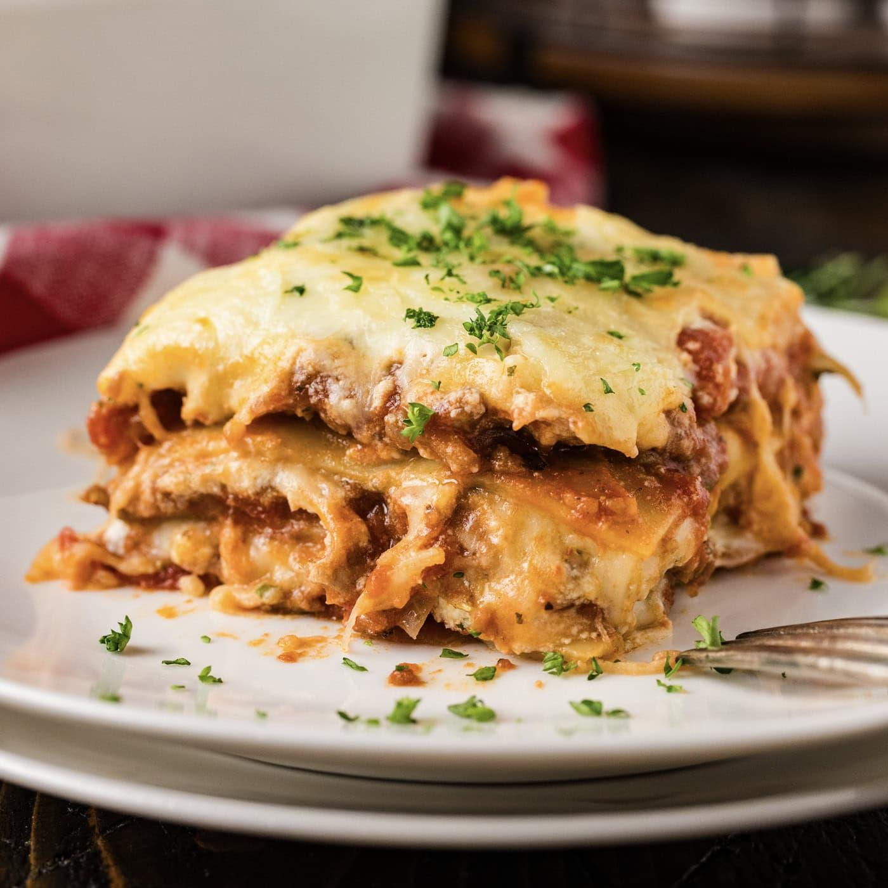

Home
Lasagna

Description
Lasagna is a classic Italian baked pasta dish made with layers of tender
lasagna noodles, seasoned ground beef, creamy ricotta cheese, rich tomato
sauce, melted mozzarella cheese, and grated Parmesan cheese. It is baked
until hot, bubbly, and golden brown.
This hearty and comforting meal is perfect for family dinners and special
occasions. Each layer is packed with rich flavors and creamy cheese,
making every bite satisfying and delicious.
Ingredients
- 12 lasagna noodles
- 500 g ground beef
- 1 medium onion, finely diced
- 3 cloves garlic, minced
- 700 g tomato pasta sauce
- 2 tbsp tomato paste
- 1 tsp dried oregano
- 1 tsp dried basil
- 1 tsp salt
- ½ tsp ground black pepper
- 250 g ricotta cheese
- 1 egg
- 2 cups shredded mozzarella cheese
- ½ cup grated Parmesan cheese
- 2 tbsp chopped fresh parsley (for garnish)
Steps
- Cook the lasagna noodles according to the package instructions. Drain and set aside.
- Heat a large pan over medium heat. Cook the diced onion until softened.
- Add the minced garlic and cook for about 30 seconds until fragrant.
- Add the ground beef and cook until browned.
- Stir in the tomato paste, tomato pasta sauce, oregano, basil, salt, and ground black pepper. Simmer for 15–20 minutes.
- In a bowl, mix the ricotta cheese with the egg until well combined.
- Spread a thin layer of meat sauce into the bottom of a baking dish.
- Arrange a layer of lasagna noodles over the sauce.
- Spread some of the ricotta mixture evenly over the noodles.
- Sprinkle with shredded mozzarella cheese.
- Repeat the layers until all ingredients have been used.
- Top with the remaining mozzarella and grated Parmesan cheese.
- Bake at 190°C (375°F) for 35–45 minutes until the cheese is melted and golden brown.
- Let the lasagna rest for 10–15 minutes before slicing.
- Garnish with chopped fresh parsley and serve.